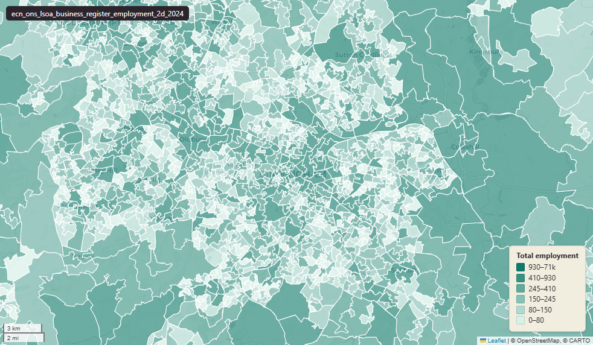

ONS Business Register and Employment Survey (BRES) employment counts for 2024 at Lower Layer Super Output Area (LSOA), broken down by 2-digit SIC2007 industry division¶
BRES Employment - LSOA, 2024, 2-digit SIC2007
ecn_ons_lsoa_business_register_employment_2d_2024

SOURCE
- Office for National Statistics (ONS). Distributed via Nomis dataset NM_189_1 ("Business Register and Employment Survey : open access").
DOCUMENTATION
- Nomis dataset page : https://www.nomisweb.co.uk/datasets/newbres6pub
- ONS BRES methodology : https://www.ons.gov.uk/employmentandlabourmarket/peopleinwork/employmentandemployeetypes/methodologies/businessregisterandemploymentsurveybres
- ONS BRES QMI : https://www.ons.gov.uk/employmentandlabourmarket/peopleinwork/employmentandemployeetypes/methodologies/businessregisteremploymentsurveybresqmi
DEFINITIONS
- "anyone working on the BRES reference date who is aged 16 years or over that the contributor directly pays from its payroll(s), in return for carrying out a full-time or part-time job or being on a training scheme." (ONS BRES Quality and Methodology Information, "Employees")
- "sole traders, sole proprietors and partners who receive drawings or a share of profits but are not paid via PAYE." (ONS BRES QMI, "Working owners")
- "employees plus working owners." (ONS BRES QMI, "Employment" — the measure stored in this table; Employment = Employees + Working owners)
- "Persons" (Nomis NM_189_1 dataset metadata, Units annotation)
SCOPE
- England and Wales. Lower Layer Super Output Area (LSOA) 2021; 35,672 rows. Filter applied at download: EMPLOYMENT_STATUS=4 (Employment), MEASURE=1 (Count), MEASURES=20100 (Value); reference date 1 January 2024.
CRS
- EPSG:27700 (OSGB 1936 / British National Grid).
LICENCE
- Open Government Licence v3.0 (OGL v3.0).
DATA QUALITY CAVEATS
- NULL means the cell was suppressed by ONS for disclosure control; 0 means genuinely zero employment. Suppression bites harder at fine geographies (LSOA) and small industries, so expect many NULLs across the industry row.
- Reading values: a NULL in an industry column does NOT mean the area has no employment in that industry. It means ONS withheld the value because fewer than ~3 businesses operate there in that division/group. Sum across industries with caution.
NOT IN THIS DATASET
- The narrower Employees-only measure (payroll only, excluding working owners).
- Full-time and part-time breakdowns of Employees.
- Industry percentage form (Nomis MEASURE=2). All three are separate slices the Nomis API can serve.
- Scotland and Northern Ireland: the LSOA 2021 boundary covers only England and Wales.
LOADED INTO uk_baseline
- Loaded by PNC, 27 May 2026.
Columns¶
| Column | Type | Description / unit |
|---|---|---|
fid |
integer |
|
lsoa21cd |
character varying(20) |
Source field GEOGRAPHY_CODE. |
lsoa21nm |
character varying(255) |
Source field GEOGRAPHY_NAME. |
a_01_crop_animal_prd_hunting_related |
integer |
Unit: "Persons". SIC2007 2-digit code 01: Crop and animal production, hunting and related service activities. |
a_02_forestry_logging |
integer |
Unit: "Persons". SIC2007 2-digit code 02: Forestry and logging. |
a_03_fishing_aquaculture |
integer |
Unit: "Persons". SIC2007 2-digit code 03: Fishing and aquaculture. |
b_05_mining_coal_lignite |
integer |
Unit: "Persons". SIC2007 2-digit code 05: Mining of coal and lignite. |
b_06_extraction_crude_petroleum_&ng |
integer |
Unit: "Persons". SIC2007 2-digit code 06: Extraction of crude petroleum and natural gas. |
b_07_mining_metal_ores |
integer |
Unit: "Persons". SIC2007 2-digit code 07: Mining of metal ores. |
b_08_other_mining_quarrying |
integer |
Unit: "Persons". SIC2007 2-digit code 08: Other mining and quarrying. |
b_09_mining_support_svc_actvs |
integer |
Unit: "Persons". SIC2007 2-digit code 09: Mining support service activities. |
c_10_mfct_food_prod |
integer |
Unit: "Persons". SIC2007 2-digit code 10: Manufacture of food products. |
c_11_mfct_beverages |
integer |
Unit: "Persons". SIC2007 2-digit code 11: Manufacture of beverages. |
c_12_mfct_tobacco_prod |
integer |
Unit: "Persons". SIC2007 2-digit code 12: Manufacture of tobacco products. |
c_13_mfct_textiles |
integer |
Unit: "Persons". SIC2007 2-digit code 13: Manufacture of textiles. |
c_14_mfct_wearing_apparel |
integer |
Unit: "Persons". SIC2007 2-digit code 14: Manufacture of wearing apparel. |
c_15_mfct_leather_related_prod |
integer |
Unit: "Persons". SIC2007 2-digit code 15: Manufacture of leather and related products. |
c_16_mfct_wood_prod_wood_cork |
integer |
Unit: "Persons". SIC2007 2-digit code 16: Manufacture of wood and of products of wood and cork, except furniture;manufacture of articles of straw and plaiting materials. |
c_17_mfct_paper_paper_prod |
integer |
Unit: "Persons". SIC2007 2-digit code 17: Manufacture of paper and paper products. |
c_18_printing_reprd_recorded_media |
integer |
Unit: "Persons". SIC2007 2-digit code 18: Printing and reproduction of recorded media. |
c_19_mfct_coke_refined_petrol_prod |
integer |
Unit: "Persons". SIC2007 2-digit code 19: Manufacture of coke and refined petroleum products. |
c_20_mfct_chem_chemical_prod |
integer |
Unit: "Persons". SIC2007 2-digit code 20: Manufacture of chemicals and chemical products. |
c_21_mfct_basic_pharma_prod_pharma_prep |
integer |
Unit: "Persons". SIC2007 2-digit code 21: Manufacture of basic pharmaceutical products and pharmaceutical preparations. |
c_22_mfct_rubber_plastic_prod |
integer |
Unit: "Persons". SIC2007 2-digit code 22: Manufacture of rubber and plastic products. |
c_23_mfct_other_non_metallic_mineral_prod |
integer |
Unit: "Persons". SIC2007 2-digit code 23: Manufacture of other non-metallic mineral products. |
c_24_mfct_basic_metals |
integer |
Unit: "Persons". SIC2007 2-digit code 24: Manufacture of basic metals. |
c_25_mfct_fabricated_metal_prod |
integer |
Unit: "Persons". SIC2007 2-digit code 25: Manufacture of fabricated metal products, except machinery and equipment. |
c_26_mfct_comp_electronic_optical_prod |
integer |
Unit: "Persons". SIC2007 2-digit code 26: Manufacture of computer, electronic and optical products. |
c_27_mfct_electrical_equip |
integer |
Unit: "Persons". SIC2007 2-digit code 27: Manufacture of electrical equipment. |
c_28_mfct_machinery_equip_nec |
integer |
Unit: "Persons". SIC2007 2-digit code 28: Manufacture of machinery and equipment n.e.c. |
c_29_mfct_motor_vehicles_trailers_semi_trailers |
integer |
Unit: "Persons". SIC2007 2-digit code 29: Manufacture of motor vehicles, trailers and semi-trailers. |
c_30_mfct_other_transport_equip |
integer |
Unit: "Persons". SIC2007 2-digit code 30: Manufacture of other transport equipment. |
c_31_mfct_furniture |
integer |
Unit: "Persons". SIC2007 2-digit code 31: Manufacture of furniture. |
c_32_other_manufacturing |
integer |
Unit: "Persons". SIC2007 2-digit code 32: Other manufacturing. |
c_33_repair_installation_machinery_equip |
integer |
Unit: "Persons". SIC2007 2-digit code 33: Repair and installation of machinery and equipment. |
d_35_electricity_gas_steam_ac_supply |
integer |
Unit: "Persons". SIC2007 2-digit code 35: Electricity, gas, steam and air conditioning supply. |
e_36_water_collection_treatment_supply |
integer |
Unit: "Persons". SIC2007 2-digit code 36: Water collection, treatment and supply. |
e_37_sewerage |
integer |
Unit: "Persons". SIC2007 2-digit code 37: Sewerage. |
e_38_waste_collection_treatment_disposal_actvs |
integer |
Unit: "Persons". SIC2007 2-digit code 38: Waste collection, treatment and disposal activities; materials recovery. |
e_39_remediation_actvs_other_waste_mgmt |
integer |
Unit: "Persons". SIC2007 2-digit code 39: Remediation activities and other waste management services. This division includes the provision of remediation services, i.e. the cleanup of contaminated buildings and sites, soil, surface or ground water. |
f_41_construction_buildings |
integer |
Unit: "Persons". SIC2007 2-digit code 41: Construction of buildings. |
f_42_civil_engineering |
integer |
Unit: "Persons". SIC2007 2-digit code 42: Civil engineering. |
f_43_specialised_construction_actvs |
integer |
Unit: "Persons". SIC2007 2-digit code 43: Specialised construction activities. |
g_45_wholesale_retail_trd_repair_motor_vehicles |
integer |
Unit: "Persons". SIC2007 2-digit code 45: Wholesale and retail trade and repair of motor vehicles and motorcycles. |
g_46_wholesale_trd |
integer |
Unit: "Persons". SIC2007 2-digit code 46: Wholesale trade, except of motor vehicles and motorcycles. |
g_47_retail_trd |
integer |
Unit: "Persons". SIC2007 2-digit code 47: Retail trade, except of motor vehicles and motorcycles. |
h_49_land&_transport_transport_via_pipelines |
integer |
Unit: "Persons". SIC2007 2-digit code 49: Land transport and transport via pipelines. |
h_50_water_transport |
integer |
Unit: "Persons". SIC2007 2-digit code 50: Water transport. |
h_51_air_transport |
integer |
Unit: "Persons". SIC2007 2-digit code 51: Air transport. |
h_52_warehousing_support_actvs_for_transport |
integer |
Unit: "Persons". SIC2007 2-digit code 52: Warehousing and support activities for transportation. |
h_53_postal_courier_actvs |
integer |
Unit: "Persons". SIC2007 2-digit code 53: Postal and courier activities. |
i_55_accommodation |
integer |
Unit: "Persons". SIC2007 2-digit code 55: Accommodation. |
i_56_food_beverage_svc_actvs |
integer |
Unit: "Persons". SIC2007 2-digit code 56: Food and beverage service activities. |
j_58_publishing_actvs |
integer |
Unit: "Persons". SIC2007 2-digit code 58: Publishing activities. |
j_59_motion_picture_video_television_programme_prd |
integer |
Unit: "Persons". SIC2007 2-digit code 59: Motion picture, video and television programme production, sound recording and music publishing activities. |
j_60_programming_broadcasting_actvs |
integer |
Unit: "Persons". SIC2007 2-digit code 60: Programming and broadcasting activities. |
j_61_telecommunications |
integer |
Unit: "Persons". SIC2007 2-digit code 61: Telecommunications. |
j_62_comp_programming_consultancy_related_actvs |
integer |
Unit: "Persons". SIC2007 2-digit code 62: Computer programming, consultancy and related activities. |
j_63_information_svc_actvs |
integer |
Unit: "Persons". SIC2007 2-digit code 63: Information service activities. |
k_64_fincl_svc_actvs |
integer |
Unit: "Persons". SIC2007 2-digit code 64: Financial service activities, except insurance and pension funding. |
k_65_insurance_reinsurance_pension_funding |
integer |
Unit: "Persons". SIC2007 2-digit code 65: Insurance, reinsurance and pension funding, except compulsory social security. |
k_66_actvs_auxiliary_to_fincl_svcs_insurance_actvs |
integer |
Unit: "Persons". SIC2007 2-digit code 66: Activities auxiliary to financial services and insurance activities. |
l_68_real_estate_actvs |
integer |
Unit: "Persons". SIC2007 2-digit code 68: Real estate activities. |
m_69_legal_accounting_actvs |
integer |
Unit: "Persons". SIC2007 2-digit code 69: Legal and accounting activities. |
m_70_actvs_head_offices;_mgmt_consultancy_actvs |
integer |
Unit: "Persons". SIC2007 2-digit code 70: Activities of head offices; management consultancy activities. |
m_71_arch_engnrng_actvs;_tchncl_testing_analysis |
integer |
Unit: "Persons". SIC2007 2-digit code 71: Architectural and engineering activities; technical testing and analysis. |
m_72_scientfc_rsrch_development |
integer |
Unit: "Persons". SIC2007 2-digit code 72: Scientific research and development. |
m_73_advertising_market_rsrch |
integer |
Unit: "Persons". SIC2007 2-digit code 73: Advertising and market research. |
m_74_other_professional_scientfc_technical_actvs |
integer |
Unit: "Persons". SIC2007 2-digit code 74: Other professional, scientific and technical activities. |
m_75_veterinary_actvs |
integer |
Unit: "Persons". SIC2007 2-digit code 75: Veterinary activities. |
n_77_rental_leasing_actvs |
integer |
Unit: "Persons". SIC2007 2-digit code 77: Rental and leasing activities. |
n_78_employment_actvs |
integer |
Unit: "Persons". SIC2007 2-digit code 78: Employment activities. |
n_79_travel_agency_tour_operator_other |
integer |
Unit: "Persons". SIC2007 2-digit code 79: Travel agency, tour operator and other reservation service and related activities. |
n_80_security_investigation_actvs |
integer |
Unit: "Persons". SIC2007 2-digit code 80: Security and investigation activities. |
n_81_svcs_to_buildings_lscape_actvs |
integer |
Unit: "Persons". SIC2007 2-digit code 81: Services to buildings and landscape activities. |
n_82_office_admin_office_support_other_bs_actvs |
integer |
Unit: "Persons". SIC2007 2-digit code 82: Office administrative, office support and other business support activities. |
o_84_pub_admin_defence;_compulsory_ss |
integer |
Unit: "Persons". SIC2007 2-digit code 84: Public administration and defence; compulsory social security. |
p_85_education |
integer |
Unit: "Persons". SIC2007 2-digit code 85: Education. |
q_86_human_health_actvs |
integer |
Unit: "Persons". SIC2007 2-digit code 86: Human health activities. |
q_87_residential_care_actvs |
integer |
Unit: "Persons". SIC2007 2-digit code 87: Residential care activities. |
q_88_social_work_actvs_ |
integer |
Unit: "Persons". SIC2007 2-digit code 88: Social work activities without accommodation. |
r_90_creative_arts_entmt_actvs |
integer |
Unit: "Persons". SIC2007 2-digit code 90: Creative, arts and entertainment activities. |
r_91_libraries_archives_museums_other |
integer |
Unit: "Persons". SIC2007 2-digit code 91: Libraries, archives, museums and other cultural activities. |
r_92_gambling_betting_actvs |
integer |
Unit: "Persons". SIC2007 2-digit code 92: Gambling and betting activities. |
r_93_sports_actvs_amusement_rec |
integer |
Unit: "Persons". SIC2007 2-digit code 93: Sports activities and amusement and recreation activities. |
s_94_actvs_membership_orgs |
integer |
Unit: "Persons". SIC2007 2-digit code 94: Activities of membership organisations. |
s_95_repair_comps_personal_hh_goods |
integer |
Unit: "Persons". SIC2007 2-digit code 95: Repair of computers and personal and household goods. |
s_96_other_personal_svc_actvs |
integer |
Unit: "Persons". SIC2007 2-digit code 96: Other personal service activities. |
t_97_actvs_hhs_as_employers_dom_personnel |
integer |
Unit: "Persons". SIC2007 2-digit code 97: Activities of households as employers of domestic personnel. |
t_98_undiff_goods__svcs_producing_actvs |
integer |
Unit: "Persons". SIC2007 2-digit code 98: Undifferentiated goods- and services-producing activities of private households for own use. |
u_99_actvs_extratt_orgs_bodies |
integer |
Unit: "Persons". SIC2007 2-digit code 99: Activities of extraterritorial organisations and bodies. |
geom |
geometry(MultiPolygon,27700) |
Geometry from uk_baseline.adm_ons_lsoa_boundary_2021. |